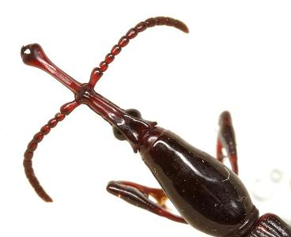

| Texas Coleoptera Photos are cross-posted at BugGuide.net See also: Texas Beetle Resources Return to Texas Entomology - Compiled by Mike Quinn |
 |
World's Largest Collection of Texas Beetle Photographs Over 5,000 photographs of Texas beetles representing over 2,000 of Texas' approximately 7,500 beetle species. Primer on Quinn's Photo Techniques |
American
Beetles, Volume I: Archostemata, Myxophaga, Adephaga, Polyphaga:
Staphyliniformia - Limited
Preview
Ross H Arnett, Jr.; Michael C Thomas. (editors). 2000. CRC Press LLC,
Boca Raton, FL. xvi + 443 pp.
American
Beetles, Volume II: Polyphaga: Scarabaeoidea through Curculionoidea
- Limited
Preview
Ross H Arnett, JR; Michael C Thomas; Paul E Skelley; J. Howard Frank.
(editors). 2002. CRC Press LLC, Boca Raton, FL. xiv + 861 pp
**The higher taxonomy in Tenebrionidae follows Bouchard
et al. (2005):